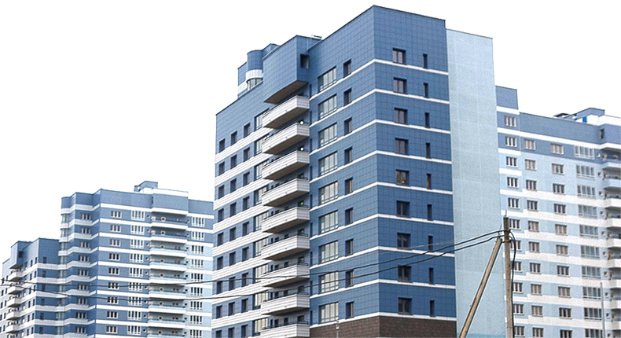

Библиотека знаний ОСМД
11 июня 2009 года принят Закон Украины «Про Загальнодержавну програму реформування і розвитку житлово-комунального господарства на 2009-2014 роки». Целью программы является выполнение мероприятий по повышению эффективности и надежности функционирования жилищно-коммунального хозяйства, обеспечение устойчивого развития и удовлетворение потребностей населения в жилищно-коммунальных услугах, соответствующих установленным нормативам, национальным стандартам, удовлетворение потребностей населения, жилищно-коммунальных услуг.
На обеспечения выполнения данного мероприятия предусмотрено:
- предоставление государственной поддержки для реализации инвестиционных проектов по техническому переоборудованию и капитальному ремонту жилых домов в которых создаются или уже созданы объединения совладельцев многоквартирных домов (ОСМД).
- частичное погашение основной суммы кредитов, проценты по кредитам, лизинговые платежи.
Одним из важнейших мероприятий является усиление влияния жителей домов на условия проживания и качество обслуживания, путём создания объединения совладельцев многоквартирного дома.